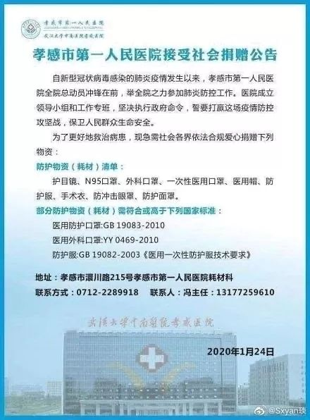
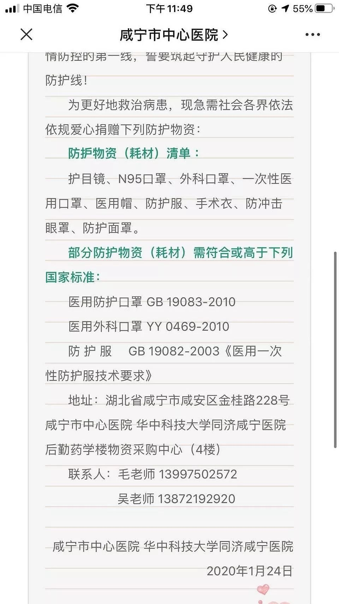
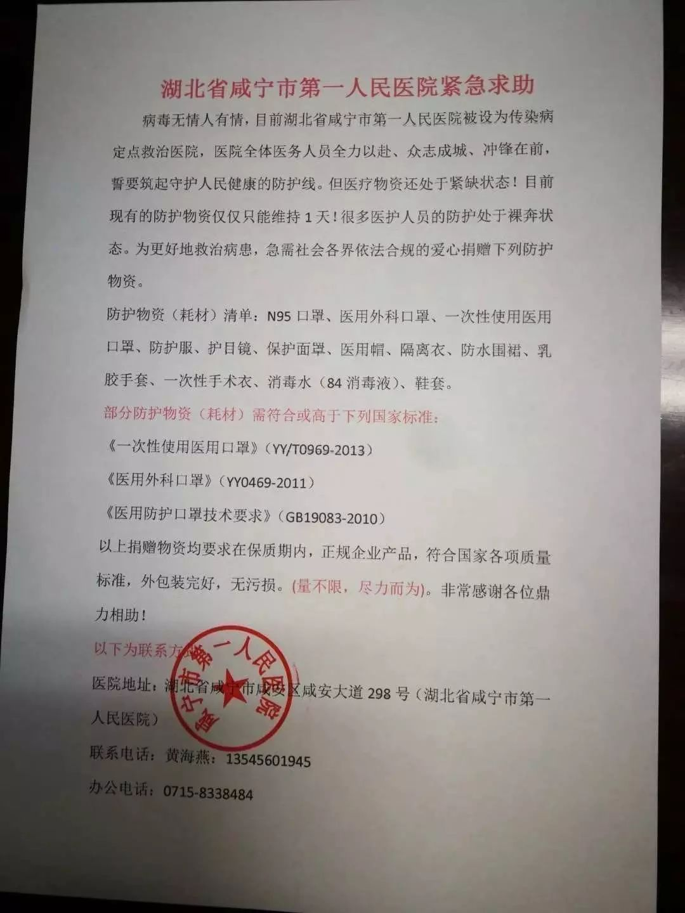
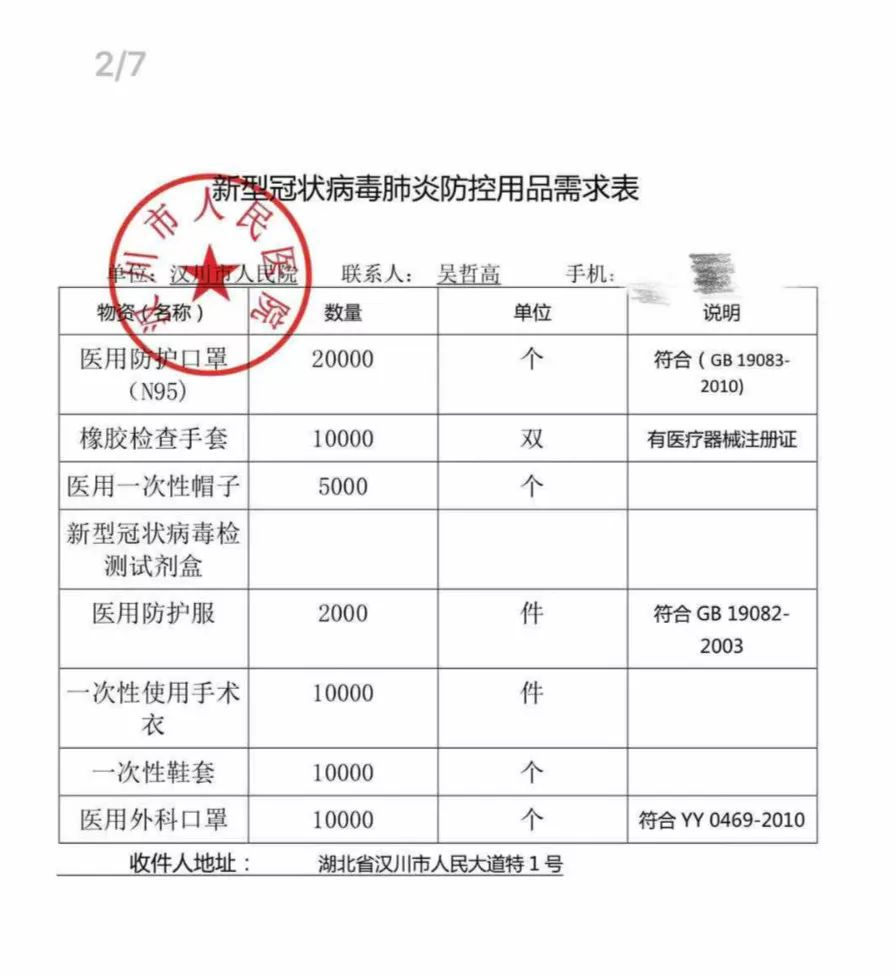

到边界拿货，货车司机组队……医疗物资如何打通武汉城
原文链接 备份链接 *************▲************* 大批量新国标标准的口罩正进入嘉兴“心脏仓” 。 （新华社/阿里巴巴供图/图） 全文共*4420*字，阅读大约需要*10*分钟。 “缺口以万为单位”，武汉市汉口医 …

咸宁市第一人民医院现有防护物资仅能维持一天，襄阳市中医医院防护服已告罄，N95口罩需消毒再利用，汉川市人民医院的橡胶手套快要消耗完。
全文2306字，阅读约需5分钟
1月26日，来自湖北省多地的数家医院向新京报记者证实，目前医疗防护物资已告急。它们纷纷向社会发出捐赠公告。
湖北省卫健委发布的消息称，截至1月25日24时，湖北省累计报告新型冠状病毒感染的肺炎确诊病例1052例，其中武汉市618例，黄冈市122例，孝感市55例，咸宁市43例。
武汉之外，湖北省其余市州的防疫状况日益受到关注。
新京报记者了解到，孝感、咸宁、恩施、襄阳等多地医院的防护物资均告急，咸宁市第一人民医院现有防护物资仅能维持一天，襄阳市中医医院防护服已告罄，N95口罩需消毒再利用，汉川市人民医院的橡胶手套快要消耗完。
━━━━━
孝感：口罩、面罩紧缺
孝感市中心医院的工作人员告诉新京报记者，医院现在最紧缺的是防护服、N95口罩，一天的需求量是300件。1月24日晚上医院发出捐赠公告，1月26日已经收到了为数不多的防护服，勉强维持四、五天的用量，但是依旧没有N95口罩和面罩，眼罩也是极少量的存货。

▲孝感市中心医院的捐赠公告。 受访者供图
孝感市第一人民医院的工作人员亦称，口罩特别短缺，起步需求量是1万个，之后的需求量还会增长，要看收治病人的数量。

▲孝感市第一人民医院的捐赠公告。 受访者供图
━━━━━
咸宁第一人民医院：需要5000个N95口罩
咸宁市中心医院的工作人员称，他们目前对N95口罩的需求量是5000个，防护面罩是一两千个，防护服还有维持半个月的数量：“前几天已经有人给我们寄了顺丰快递，但不知什么原因，目前都没收到。目前我们的医护人员暂时比较安全，但人都很疲劳。”

▲咸宁市中心医院的捐赠公告。 受访者供图
咸宁市第一人民医院的工作人员向新京报记者提供的带有公章的紧急求助书显示，目前该医院现有的防护物资仅能维持1天，很多医护人员防护不加，急需社会各界捐赠。该医院的工作人员告诉新京报记者，现在最缺口罩，已经募捐到一部分，但现在都卡在路上没有收到。

▲咸宁市第一人民医院的紧急求助及捐助需求单。 受访者供图
“以15天的用量计算，N95口罩、医用外科口罩及一次性使用医用口罩各需要两万七千个，防护服、护目镜、保护面罩、乳胶手套、消毒水等各需要一万四千个，新型冠状病毒检测试剂需要1000个。每天的消耗量很大，所以严重告急。但是现在个人很难邮寄进来，需要一个厂家和快递公司对接。”上述工作人员称。
━━━━━
恩施：部分医院防护物资只能维持几天
恩施州利川市人民医院的工作人员称，发捐赠公告时，防护物资只能维持三、五天了，目前陆续已经收到一些爱心人士的捐赠，口罩、护目镜、防护面罩等需求量仍在1万个左右。“目前医护人员情况还好，没有出现交叉感染的情况。”
鹤峰县是湖北省内唯一不通高速的县级市，交通不便，物资匮乏，返乡人口居多。鹤峰县中心医院的一位院领导告诉新京报记者，现在的医疗物资只能维持几天的用量，目前口罩、防护服都缺1万套。

▲鹤峰县中心医院的捐助公告。 受访者供图
━━━━━
襄阳市中医医院：医护对口罩消毒再利用
湖北省卫健委发布的通报中，黄石市、襄阳市、咸宁市为报告首例确诊病例。新京报记者联系襄阳市的多家医院，他们称，由于从武汉返乡的人数多，他们的医疗物资十分紧缺，故亦向社会发出了捐赠公告。
“发公告时，防护服已经一件也没有了，我们现在都是穿的医院反复消毒的隔离衣，再加一层一次性手术衣。”襄阳市中医医院的工作人员告诉新京报记者，“今天中午统计了下，N95的口罩只剩下30副了，只能消毒了再利用。”
上述工作人员表示，现在医护人员也在加班扛着，医院熬制了一些中药，发给大家喝：“由于N95的口罩每天消耗量在100到150个之间，防护服每天80套，如果按照一周的数量计算，希望能先捐到200件防护服，我们给一线直接接触病例的人用，其他人我们用普通的，这样社会各界也能捐给其他缺物资的地方使用。”

▲襄阳市中医医院的捐助公告。 受访者供图
另一家医院，襄阳市中心医院的工作人员称，希望得到社会的援助，目前能捐多少就捐多少，最需要N95口罩和防护服。

▲襄阳市中心医院的捐助公告。 受访者供图
━━━━━
汉川：N95口罩、手套紧缺
汉川市人民医院的一名医生告诉新京报记者，目前医院内物资严重短缺，N95防护口罩已经一个不剩，一线的医护人员只能戴着两层医用外科口罩继续工作。他称，医护人员均已停休，1600余人全部在岗，每天口罩的消耗量超过2000个，物资消耗严重：“现在汉川市的N95口罩已经全部断货，根本没有地方购买。我们最缺乏的就是这种口罩。”
这名医生称，医院内的橡胶手套使用的也很快，现在存货已经快消耗完：“医护人员需要在完全封闭的情况下，对患者进行检查。”他表示，目前这些物资都很难在市内买到，“我们直接去过医疗器材厂调货，但是效果并不理想。”
这名医生称，无奈下，医院只能向社会求助，通过志愿者扩散出去，进行筹集，或通过官方慈善机构筹集。
此外，这名医生称，虽然向社会募捐护目镜，但是需要提示捐助者，并非所有护目镜都符合医用防护的要求。“需要那种眼眶周围带着橡胶圈的，能够将眼睛安全与外界隔离开，以免细菌从眼部入侵。”

▲汉川市人民医院物资需求表。 受访者供图
汉川市第二人民医院也面临相同的问题。
“口罩最缺乏，根本买不到。”一名医生告诉新京报记者，目前医护人员们格外注意，尽量减少更换的频率，但是口罩还是不够用。“像是口罩、橡胶手套以及防护服，很多都是一次性使用的，一旦反复使用，就失去了原本的功效。”
这名医生称，目前医院也在自己想办法，但效果并不好：“断货太严重，和厂商问，他们也说不清到底什么时候能够有货。”
*新京报记者 王昱倩 张静雅 编辑 郭琛 校对 王心*
点击下图进入”全国新型冠状病毒感染肺炎实时地图“

*值班编辑 吾彦祖*


本文未经新京报书面授权不得转载使用
欢迎朋友圈分享

原文链接 备份链接 *************▲************* 大批量新国标标准的口罩正进入嘉兴“心脏仓” 。 （新华社/阿里巴巴供图/图） 全文共*4420*字，阅读大约需要*10*分钟。 “缺口以万为单位”，武汉市汉口医 …
原文链接 备份链接 武汉第一批七家定点医院医用物资也存在短缺 防疫物资今日抵达汉口，明日有望缓解 本文首发于南方人物周刊 文 | 本刊记者 徐梅 赵蕾 张宇欣 编辑 | 周建平 蒯乐昊 全文约3479字，细读大约需要9分钟 有的市属一 …
原文链接 备份链接 今天，湖北省武汉市红十字会向武汉市中心医院提供了医用外科口罩4000个、医用防护服600套；向武汉市洪山区中医医院提供了医用防护服400套，84消毒液10箱，医用口罩5箱。武汉红十字会表示，接收的所有物资都将被送往一线 …
原文链接 备份链接 按规定，他们每接一次病人，都要全车消毒、销毁防护服，不然可能会成为新的传染源。但现实情况是，他们全站连一套防护服都没了。除夕夜里两点，他没有睡觉，发了这半年里唯一一条不是关于女儿的朋友圈，是一条物资的求助。他告诉《人 …
原文链接 备份链接 武汉140公里以外：一天隔离50人，除夕夜接诊护士没有防护服丨武汉肺炎亲历 2020-01-25 22:47 作者：李静 来源：中国经营网 本报记者 李静 湖北广水报道 一天之内隔离50人，这对于广水市第一人民医院院办 …